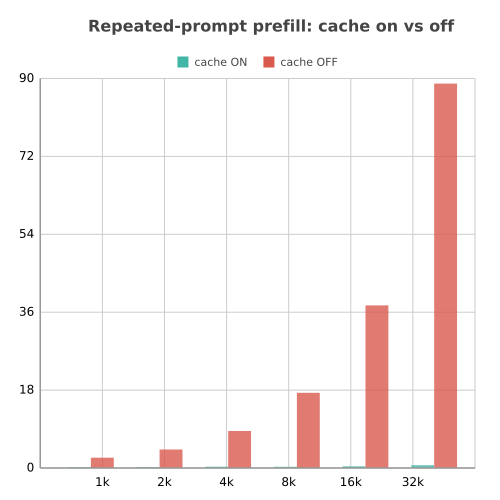

Disk KV restore for hybrid MoE models on Apple Silicon. A follow-up on a 130,000-token conversation drops from a multi-minute cold prefill to a sub-second restore.
uv add qmlx-serve

Qwen3.5-122B is hybrid: roughly 75% of its layers are recurrent DeltaNet, which cannot be rewound, so an in-memory prefix cache can never reuse them. qMLX drops the in-memory tier entirely and checkpoints the KV to SSD instead. Disk KV restore is not a fallback here, it is the only cache.
Drop-in OpenAI and Anthropic APIs, the same surface as upstream Rapid-MLX. One flag turns the disk cache on.
qmlx serve mlx-community/Qwen3.5-122B-A10B-4bit \ --text-only --host 0.0.0.0 --port 8095 \ --max-num-seqs 1 \ --enable-prefix-cache --kv-disk-checkpoint-interval 256 # next turn on a 130k conversation: # sub-second restore instead of a cold prefill
--text-onlyThe vision path is incompatible with the hybrid continuous-batching the cache work depends on, so text serving is required for now.
The checkpoint the next turn needs never gets evicted by unmatchable interval writes under the disk cap. That was the bug that made the cache look broken on real agentic traffic.
Metrics are phase-split and honest: real decode tok/s over the decode window, real prefill throughput excluding cached tokens, disk-restore hit rate, and TTFT.
Checkpoints the attention KV to SSD and pages it back on the next turn, for hybrid recurrent plus attention MoE caches. Int4 checkpoints, dequantised layer by layer on restore.
The checkpoint the next turn actually needs never gets evicted by unmatchable interval writes hitting the disk cap. This is the fix that made the cache hold on agentic-coding traffic.
Real decode tok/s over the decode window, real prefill throughput excluding cached tokens, disk-restore hit rate, TTFT. No amortised (prompt+gen)/wall throughput number.
Pinpoints the exact token where a prefix-cache match broke, so this class of bug is diagnosable in minutes instead of a day of guessing.
Runs Qwen3.5-122B-A10B on an M3 Ultra with 96GB of unified memory. Decode slows gradually with context but there is no cliff, so it stays usable well past 100k tokens. Windowed attention to flatten that curve further is on the roadmap.
OpenAI and Anthropic compatible endpoints, the same serving surface as upstream Rapid-MLX. Point an existing client at it and go.